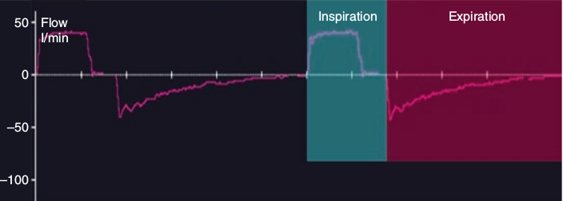

در هنگام دم منحنی شدت جریان در بالای خط شدت جریان صفر رسم میشود (شدت جریان مثبت). یعنی هنگامی که جهت جریان گاز از ونتیلاتور بسوی بیمار است شدت جریان را بر حسب توافق مثبت تعریف میکنیم و آن را بالای خط شدت جریان صفر رسم میکنیم و در هنگام بازدم که جریان گاز از بیمار بسوی ونتیلاتور است بر حسب توافق شدت جریان را منفی تعریف میکنیم و آن را در زیر خط شدت جریان صفر نشان میدهیم. وقفه جریان گاز به معنای شدت جریان برابر با صفر می باشد. چنانچه وقفهای در انتهای دم وجود داشته باشد آن را جزء زمان دم محسوب میکنیم. بنابراین زمان دم از هنگامیکه شدت جریان مثبت میشود آغاز میگردد و تا شروع شدت جریان منفی ادامه می یابد.

منحنی شدت جریان:
۱ – همیشه مثبت است
۲ – همیشه منفی است
۳ – بسته به مد ونتیلاسیون مثبت یا منفی است
۴ – بسته به فاز تنفس مثبت یا منفی است
۵ - بستگی به نوع ونتیلاتور دارد